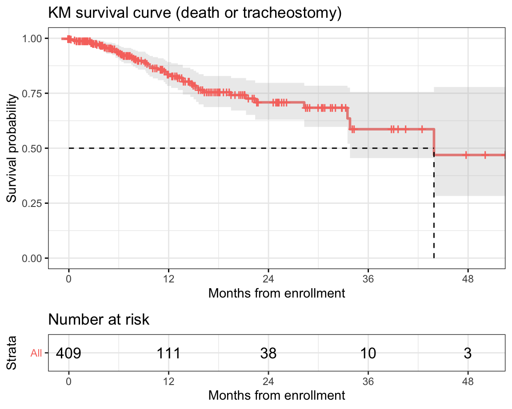

619
432
48
Close refers to the end of all tracking attempts, which includes death, refer, and lost to f/u
Note that this does not apply to the patients who are under tracking by any means (for example, phone)
Lost to fu
should meet all the followings.
- not visited for the recent 6 months, and
- can not be contacted (by phone) or the patient refused to participate the registry any longer.
Refer
should meet all the followings.
- referred to local hospital, and
- can not be contacted (by phone) or the patient refused to participate the registry any longer.
Note
Patients who were referred to local hospital should be contacted regularly (every 3 month) by phone, and the occurence of major events (gastrostomy, NIV, tracheostomy, death) should be tracked.

272
272
118
272